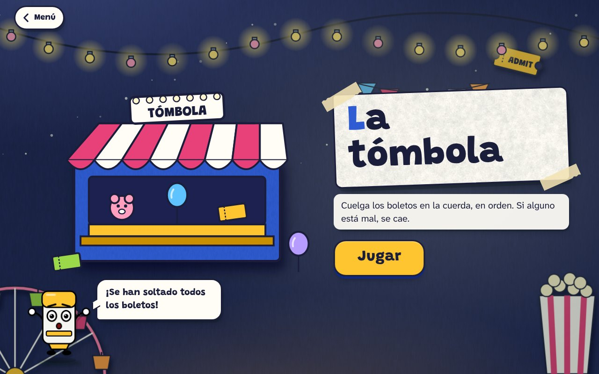
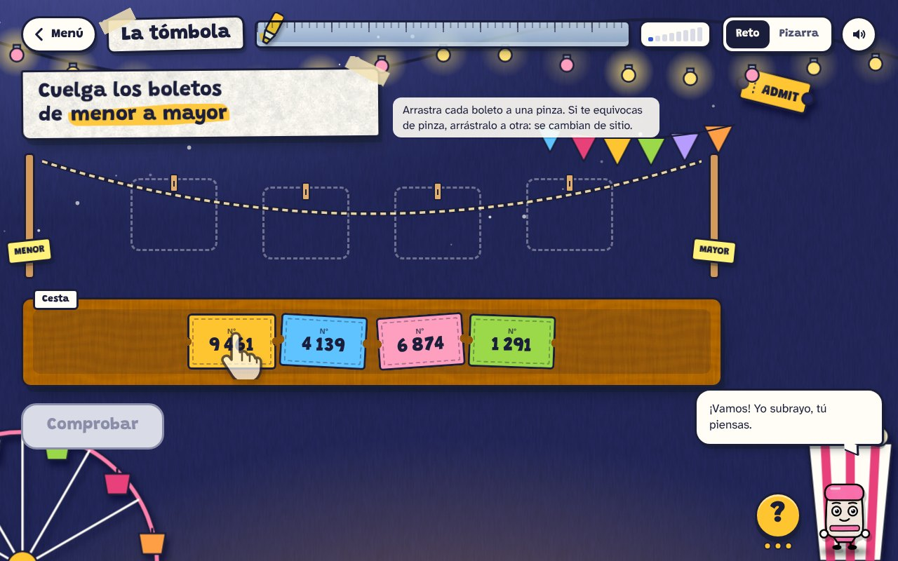
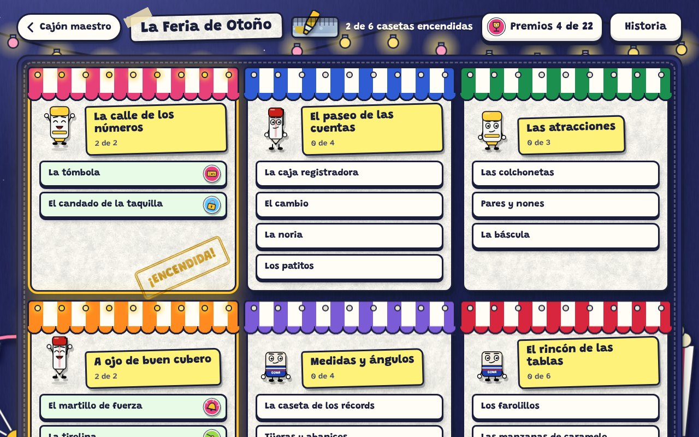
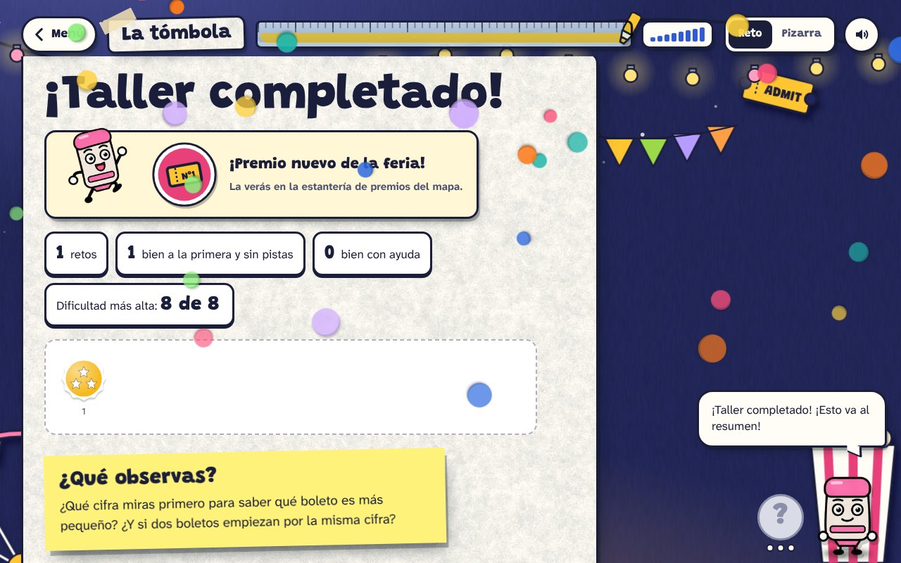
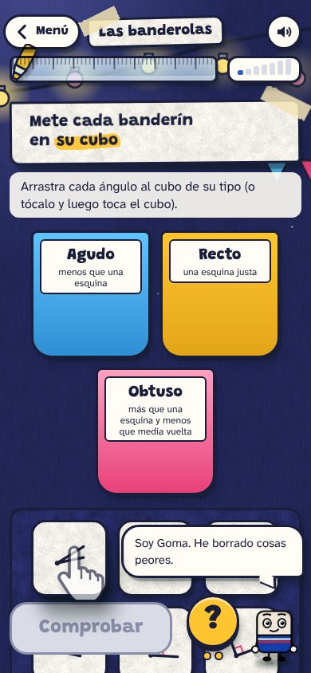
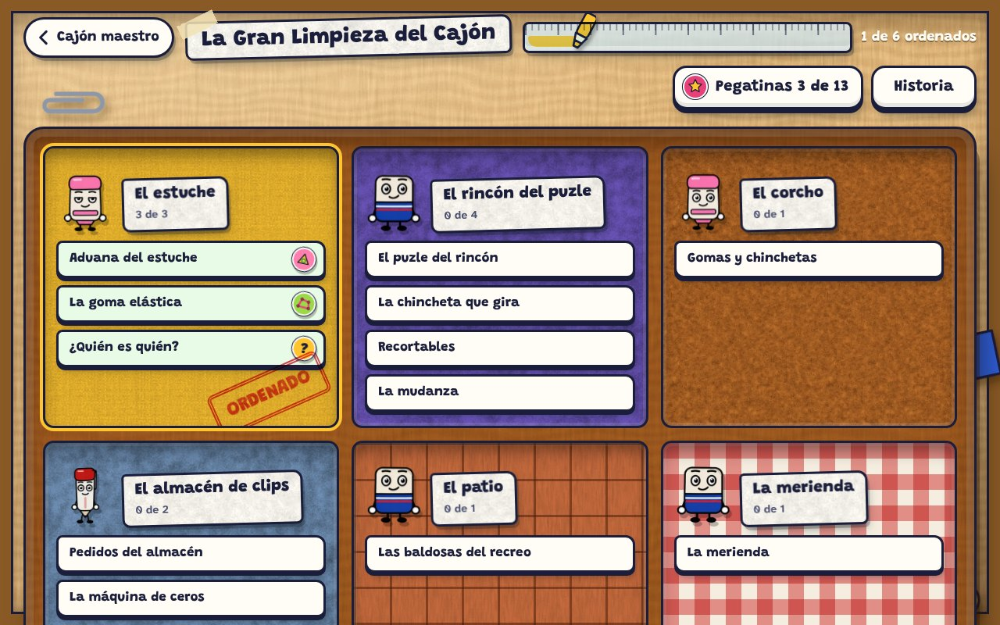
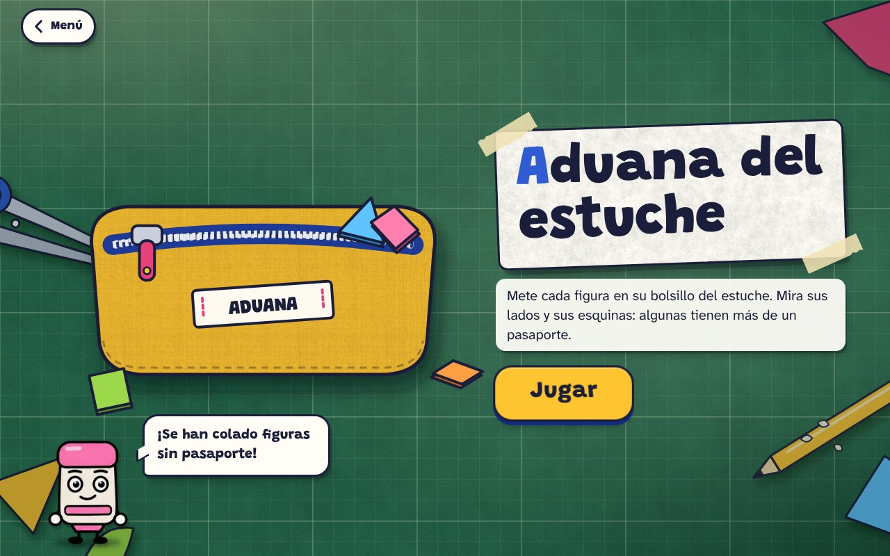
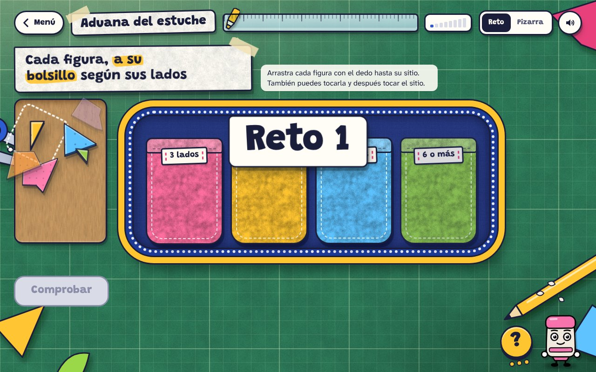
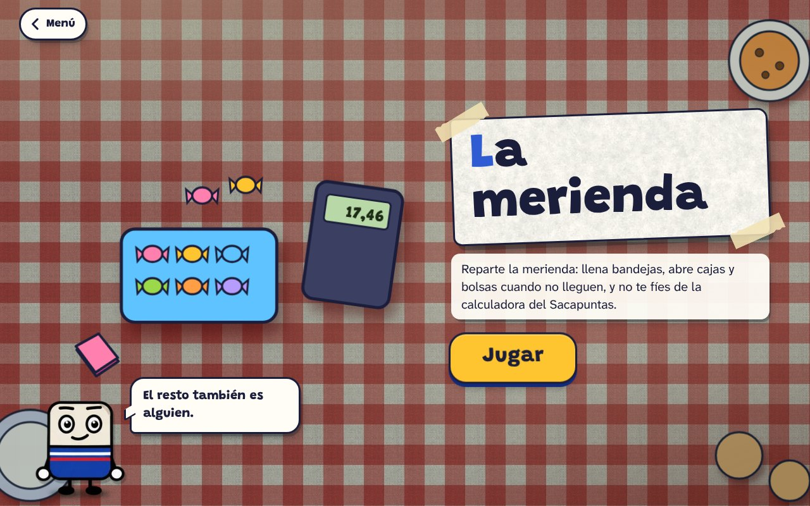

Guía de arte de La cajonera
Página de referencia para quien haga imágenes para la web (personas o IA). Web: https://aronfenix.github.io/la-cajonera/ · Código: github.com/aronfenix/la-cajonera (los juegos están en public/juegos/).
Qué es
Juegos de matemáticas para 5.º de Primaria (10-11 años, Madrid), hechos con código: cada juego es una página con un bloque de configuración en JSON y un «motor» común. Se juegan en tablet, en el ordenador y en la pizarra digital. Los juegos se agrupan en aventuras con un mapa: La Gran Limpieza del Cajón y La Feria de Otoño.
Dirección de arte: «mesa de manualidades»
- Todo parece cartulina recortada y pegada sobre una mesa bajo un flexo: recortes con canto, cinta de carrocero, pegatinas, fieltro, sellos de tinta.
- Contorno azul marino casi negro
#1b1e3a, continuo y de grosor uniforme. Esquinas redondeadas. - Luz desde arriba a la izquierda; sombra de contacto abajo a la derecha. Colores planos, sin brillos de plástico ni 3D.
- Letra de títulos: Grandstander (redonda, gruesa, tipo rotulador). Letra de texto: Atkinson Hyperlegible.
- Los fondos dejan el centro despejado: ahí va el juego.
#fffdf6papel#1b1e3atinta (contorno y texto)#ffc531amarillo#c98f00amarillo oscuro#2f5bd3cobalto#e8417afucsia#5ec3ffcielo#9bd84alima#ff8a1fnaranja#d7263drojo#b79cfflila#ff9fbfrosa#d39a5cmadera#2e7d5balfombrilla#23285cnoche de feria
Personajes
Goma (goma de borrar con funda azul y bandas blanca y roja), Boli (bolígrafo con tapa roja, clip y trazo rosa) y Fosforito (subrayador con tapa rosa). Ojos grandes, extremidades negras, manos blancas. Cada acción es una tira horizontal de fotogramas de 256 × 256 (los gestos tienen 6, el baile 12). Punto de apoyo: centro de los pies, a 86 % de la altura.
- goma: reposo, hablar, pensar, pista, revisar, animar, celebrar, saludar, baile, escuchar, idea, esperar, sorpresa, senalar_izquierda, senalar_abajo
- boli: reposo, hablar, pensar, pista, revisar, animar, celebrar, saludar, baile, escuchar, idea, esperar, sorpresa, senalar_izquierda, senalar_abajo
- fosforito: reposo, hablar, pensar, pista, revisar, animar, celebrar, saludar, baile, escuchar, idea, esperar, sorpresa, senalar_izquierda, senalar_abajo


Capturas


















La Feria de Otoño: casetas
De noche, en el patio del cole. Los feriantes se han ido a cenar y han dejado la feria apagada; cada caseta se enciende cuando el juego se completa, y cada juego da un peluche de premio.
| Zona | Caseta | Rótulo | Personaje | Qué se hace |
|---|---|---|---|---|
| La calle de los números | La tómbola | TÓMBOLA | fosforito | Cuelga los boletos en la cuerda, en orden. Si alguno está mal, se cae. |
| La calle de los números | El candado de la taquilla | TAQUILLA | boli | Gira las ruedas del candado con las cifras que hay. Cada cifra, una vez. |
| El paseo de las cuentas | La caja registradora | TAQUILLA | boli | Junta las fichas, cambia 10 por 1 cuando haga falta y escribe el total. |
| El paseo de las cuentas | El cambio | CAMBIO | goma | Saca las fichas que piden. Si no llegan, rompe una de la izquierda en diez. |
| El paseo de las cuentas | La noria | NORIA | fosforito | Haz cada cuenta de cabeza. La de antes te da una pista para la siguiente. |
| El paseo de las cuentas | Los patitos | PATITOS | goma | Pesca el patito que completa la cuenta. Si fallas, el patito se va al agua. |
| Las atracciones | Las colchonetas | ¡BOING! | fosforito | Escribe dónde cae Fosforito en cada colchoneta. Si te equivocas, se pega un tortazo. |
| Las atracciones | Pares y nones | ¿PAR? | boli | Pon dos cartas para que salga lo que pide el cartel. Y luego, el truco. |
| Las atracciones | La báscula | BÁSCULA | goma | Coloca las cifras para que la aguja caiga en la zona verde. Cada pesada te dice si te pasas. |
| A ojo de buen cubero | El martillo de fuerza | ¡DING! | fosforito | Estima el resultado y márcalo en la torre. Si te acercas, suena la campana. |
| A ojo de buen cubero | La tirolina | TIROLINA | boli | Lleva a Goma por el cable hasta el número, o di a ojo por dónde va. |
| Medidas y ángulos | La caseta de los récords | RÉCORDS | goma | Mide con la regla. Ojo: no siempre está en su sitio, y a veces está rota. |
| Medidas y ángulos | Tijeras y abanicos | ABANICOS | fosforito | ¿Cuál está más abierto? Ojo: los brazos largos engañan. |
| Medidas y ángulos | Las banderolas | BANDEROLAS | goma | Agudo, recto, obtuso, llano o completo. Compara siempre con la esquina de un folio. |
| Medidas y ángulos | La ruleta | RULETA | boli | Estima, dibuja y mide ángulos con el medidor. Ojo con las dos filas de números. |
| El rincón de las tablas | Los farolillos | FAROLILLOS | goma | Enciende los farolillos de la tabla. Luego, mira qué dibujo forman. |
| El rincón de las tablas | Las manzanas de caramelo | MANZANAS | fosforito | Cuenta las manzanas sin ir de una en una: filas por columnas. |
| El rincón de las tablas | Las tiras de tickets | TICKETS | boli | Estira el rectángulo de tickets hasta el total y averigua el número que falta. |
| El rincón de las tablas | Las tres cartas | CARTAS | fosforito | Coloca las cartas para el mejor producto. Fosforito juega con las mismas. |
| El rincón de las tablas | El puesto de chapas | CHAPAS | boli | Multiplica por partes: primero las centenas, luego las decenas, luego las unidades. Y suma. |
| El rincón de las tablas | Los encargos | ENCARGOS | goma | Lee cada encargo, elige la operación, pon los datos y resuelve. |
La Gran Limpieza del Cajón: juegos
El profe va a ordenar su cajón el viernes y lo que no sirva irá a la papelera. Cada compartimento es un escenario (estuche, puzle, corcho, almacén, patio, merienda); cada juego da una pegatina.
| Compartimento | Juego | Rótulo | Personaje | Escenario |
|---|---|---|---|---|
| El estuche | Aduana del estuche | ADUANA | fosforito | estuche |
| El estuche | La goma elástica | GOMAS | goma | estuche |
| El estuche | ¿Quién es quién? | SECRETO | boli | estuche |
| El rincón del puzle | El puzle del rincón | goma | puzle | |
| El rincón del puzle | La chincheta que gira | goma | puzle | |
| El rincón del puzle | Recortables | RECORTABLES | fosforito | puzle |
| El rincón del puzle | La mudanza | MUDANZA | boli | cajon |
| El corcho | Gomas y chinchetas | CORCHO | fosforito | corcho |
| El almacén de clips | Pedidos del almacén | ALMACÉN | boli | almacen |
| El almacén de clips | La máquina de ceros | MÁQUINA | boli | almacen |
| El patio | Las baldosas del recreo | PATIO | goma | patio |
| La merienda | La merienda | MERIENDA | goma | merienda |
Archivos de estilo
- Hoja de estilos principal: piel.css · feria: feria.css · personajes: personajes.css
- Texturas: papel · cartulina · fieltro · corcho · madera · lona · mate
- Portadas ilustradas (dibujadas con código): portada.js · fondos: escena.js


Qué se queda en código
Todo lo que cambia en cada reto o tiene que ser exacto: números de boletos, ruedas y cartas; rectas, reglas, medidores de ángulos y cuadrículas; piezas cuya forma es la respuesta (la aguja de la báscula, un abanico que se abre). Las imágenes dejan esos huecos lisos.